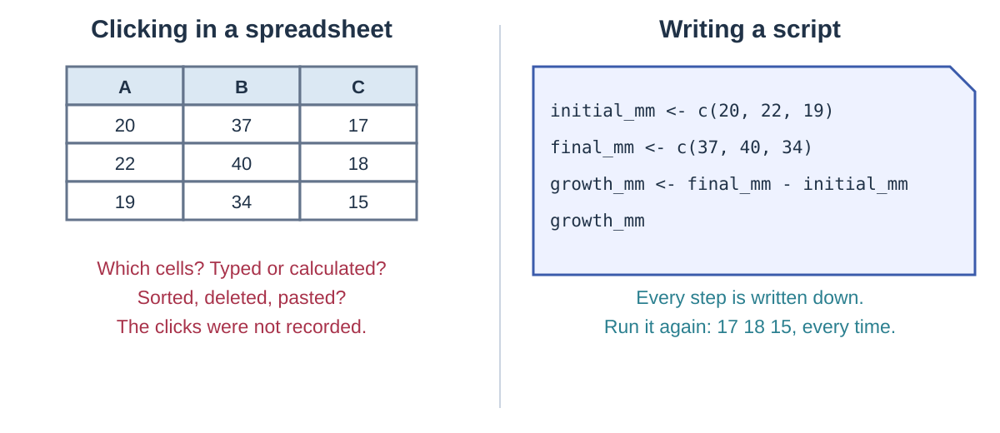
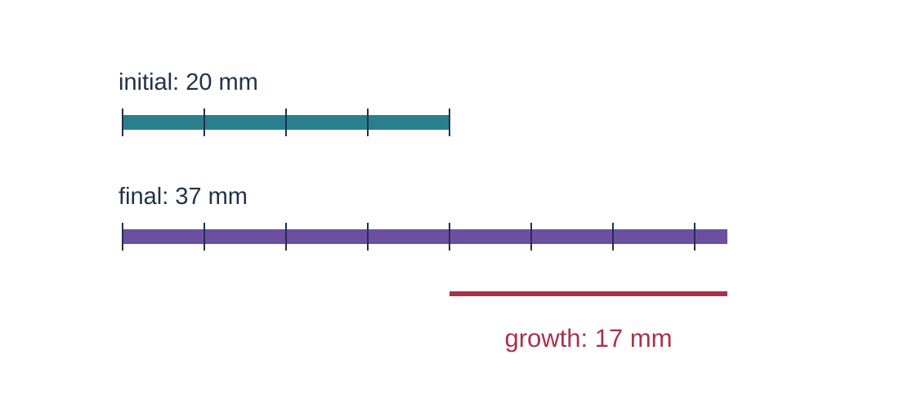
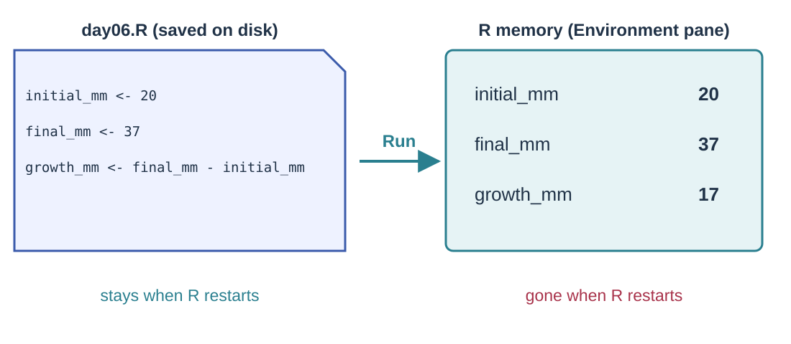
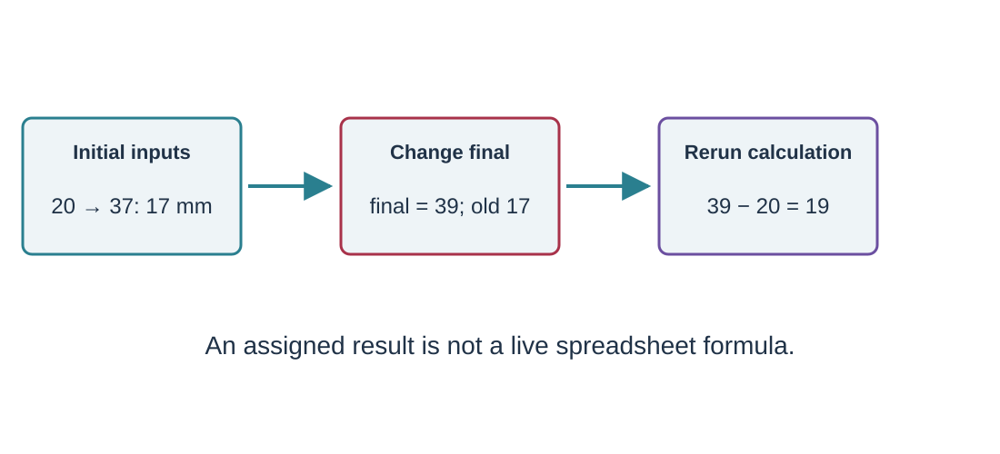
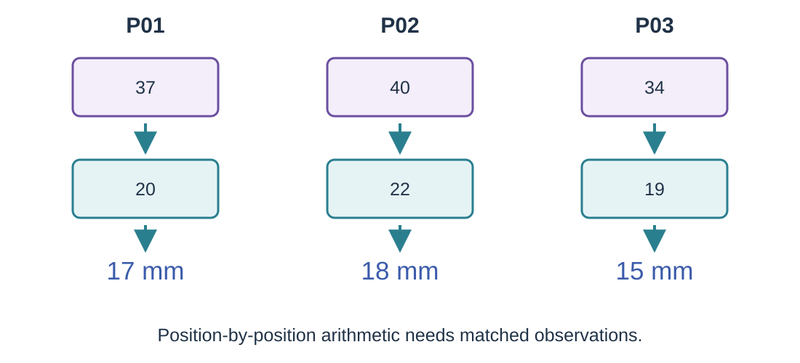
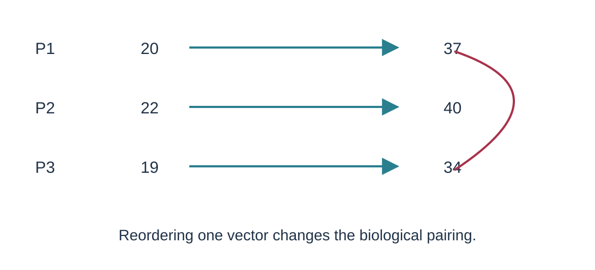
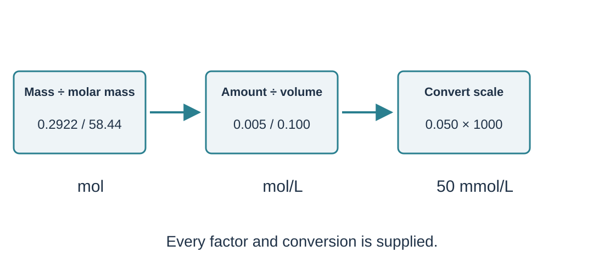

Let R keep track of the calculation
Day 6 — Numbers, names and a saved script
About this lecture
A seedling was 20 mm long at the start and 37 mm at the end. A calculator gives 17 mm. But a real experiment has dozens of plants, a value gets corrected, and your supervisor asks you to redo it. If the calculation is written down, you run it again. If it was done by clicking, you start over and hope you remember every step.
Today you will:
- calculate in the R Console;
- store results under names;
- keep several plants’ values together and summarise them;
- save a script that rebuilds everything after R restarts.
This is the first day of writing R. From Day 7 the numbers come from a file instead of being typed.
Why write the steps down?

- In a spreadsheet you see the answers, not which cells were typed, sorted or pasted.
- A script is a text file of instructions. Anyone can read it and run it again, and get the same result.
R as a calculator
Type after the > prompt in the Console and press Enter:
> 37 - 20
[1] 17
> 37 / 20
[1] 1.85[1]just numbers the first value printed.- 17 mm is the growth. 1.85 is a ratio with no unit: the plant ended 1.85 times as long.
- Both calculations are correct. Pick the one that answers your question.

Give a result a name
> initial_mm <- 20
> final_mm <- 37
> growth_mm <- final_mm - initial_mm
> growth_mm
[1] 17- Read
<-as “store this under this name”. Storing prints nothing; typing the name prints the value. - The names appear in the Environment pane.
- Capitals matter:
Growth_mmis a different name.

Write these lines in a script, day06.R, and press Run on each: the line is sent to the Console and appears there after >, as above.
A stored result does not update itself
> final_mm <- 39
> growth_mm
[1] 17
> growth_mm <- final_mm - initial_mm
> growth_mm
[1] 19- The final length changed, but
growth_mmstill says 17: a name holds a value, not a formula as in a spreadsheet cell. - Rerun the subtraction and it says 19.
- Safest: after changing an input, run the whole script from the top.

Saved script versus objects in memory
> growth_mm
[1] 17 18 15
Restarting R session...
> growth_mm
Error: object 'growth_mm' not foundAfter Session → Restart R, the object is gone. The saved day06.R is still there: select all its lines and Run, and growth_mm comes back.
- Saving the script writes instructions to disk. It does not run them.
- Running a line creates objects in memory. It does not save the script.
- So everything a result needs must be in the script, in the right order.
- Test it today: save
day06.R, restart R, run all lines.
Several plants in one name
> initial_mm <- c(20, 22, 19)
> final_mm <- c(37, 40, 34)
> growth_mm <- final_mm - initial_mm
> growth_mm
[1] 17 18 15c()combines values into a vector: one name, several values.- R subtracts position by position: 37 − 20, 40 − 22, 34 − 19.
- This is right only if both vectors list the same plants in the same order.

Summarise and compare
> mean(growth_mm)
[1] 16.66667
> length(growth_mm)
[1] 3
> growth_mm > 16
[1] TRUE TRUE FALSE
> plant_id <- c("P01", "P02", "P03")
> mean(plant_id)
[1] NA
Warning message:
In mean.default(plant_id) :
argument is not numeric or logical: returning NA- A function is a name with brackets:
mean()averages,length()counts. - Mean growth 16.67 mm, from 3 plants.
> 16answers yes/no for each plant: the first two grew more than 16 mm.- Text goes in quotes. Averaging plant IDs makes no sense, and R says so.
Run ?mean to open the help page for a function.
Wrong order, wrong answer, no warning
> final_wrong <- c(34, 37, 40)
> final_wrong - initial_mm
[1] 14 15 21- The same final lengths in a different order give 14, 15, 21 instead of 17, 18, 15.
- Same length, so R raises no error.
- Only you know which plant each position belongs to. Keep the order matched.

Convert the values, not only the label
> growth_cm <- growth_mm / 10
> growth_cm
[1] 1.7 1.8 1.5
> mean(growth_mm)
[1] 16.66667
> mean(growth_cm)
[1] 1.666667- Dividing by 10 converts mm to cm. Store it under a new name ending
_cm. - Calling the mm values “cm” without dividing would be wrong by a factor of 10.

The same habit for a lab calculation
> mass_g <- 0.2922
> molar_mass_g_mol <- 58.44
> volume_l <- 100 / 1000
> amount_mol <- mass_g / molar_mass_g_mol
> amount_mol
[1] 0.005
> 1000 * amount_mol / volume_l
[1] 50
0.2922 g of sodium chloride in 100 mL is 50 mmol/L. A mole is a unit of amount of substance; the molar mass (g/mol) says what one mole weighs. Every input has a name with its unit, so each step can be checked.
When something goes wrong
> Growth_mm
Error: object 'Growth_mm' not found
> mean(c(1, 2)
+ object ... not found: check spelling and capitals (hereGrowth_mminstead ofgrowth_mm), or run the line that creates it.- A
+prompt: R is waiting for the rest of the line, here a closing bracket. Finish it, or press Esc. - An old result: rerun the lines after changing an input.
- Lost track? Restart R and run the script from the top.
Summary
- A script is a saved list of instructions; it can be read and run again.
<-stores a value under a name. The value does not update itself when inputs change.c()makes a vector; R calculates position by position, so the order must match.- Units belong in names and comments; converting means changing the values.
- Restart R and run the script from the top to check it is complete.
Next (Day 7, import): read a whole table of measurements from a file instead of typing values.
Now: open the Day 6 exercises. Leave with day06.R: the four-plant example with comments about units, which runs from the top after a restart.